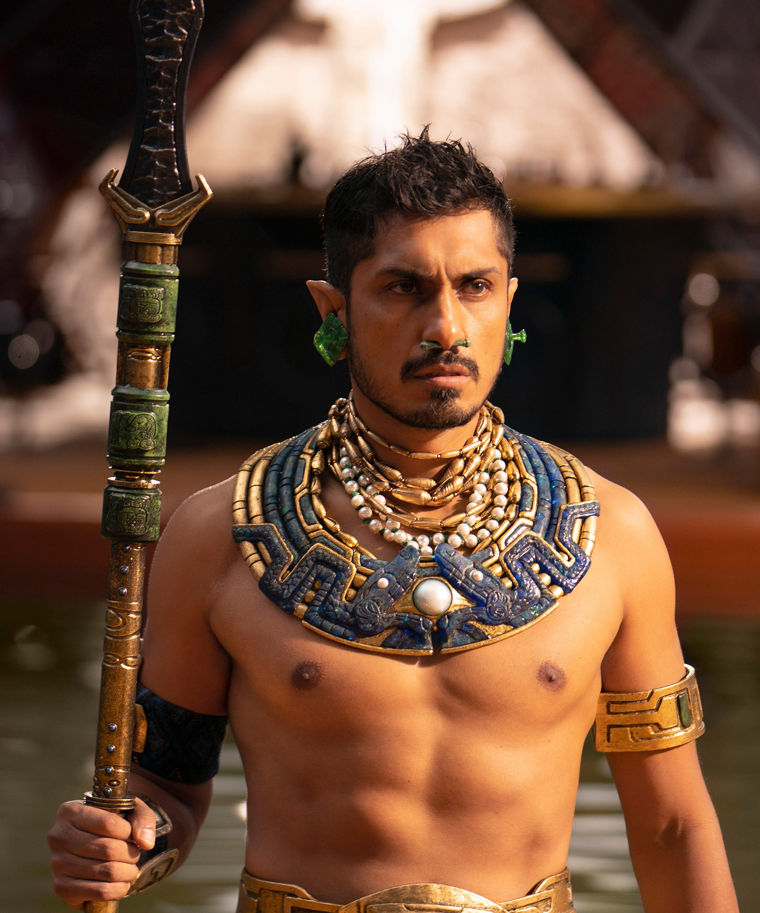
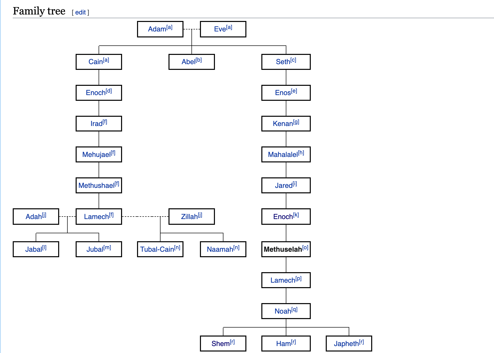
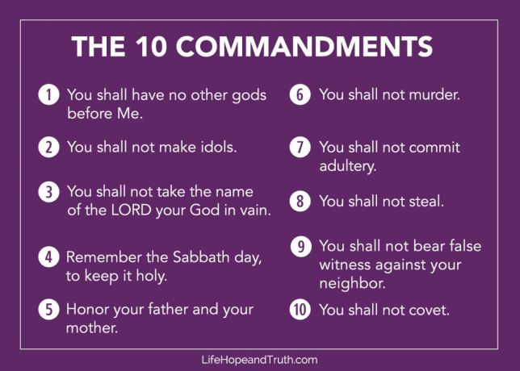
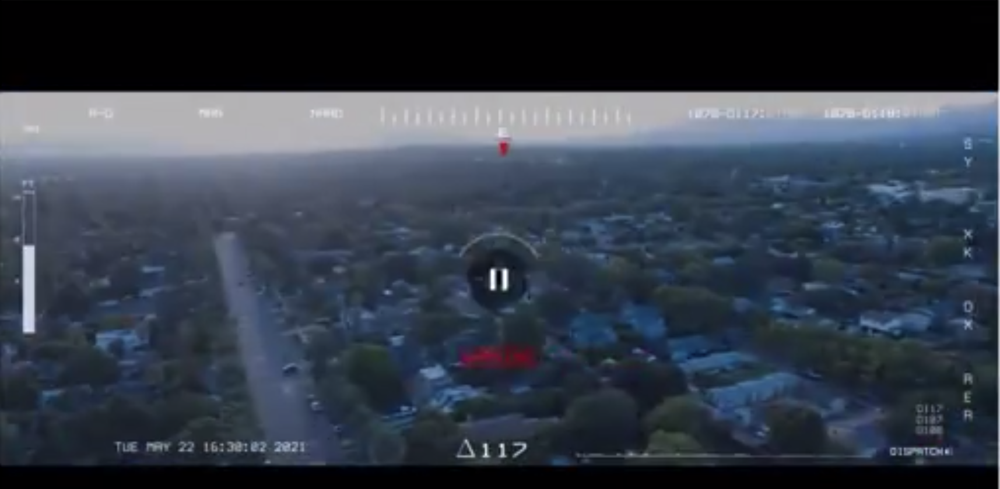
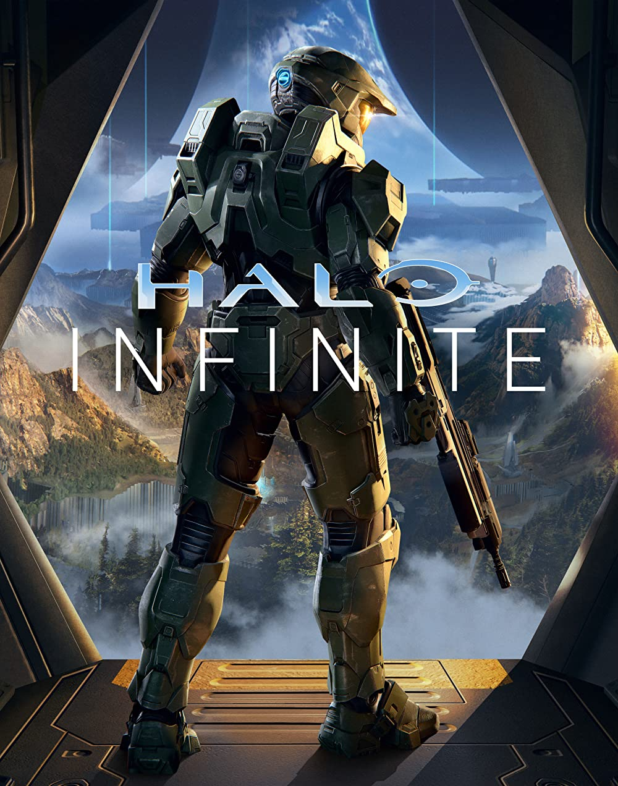
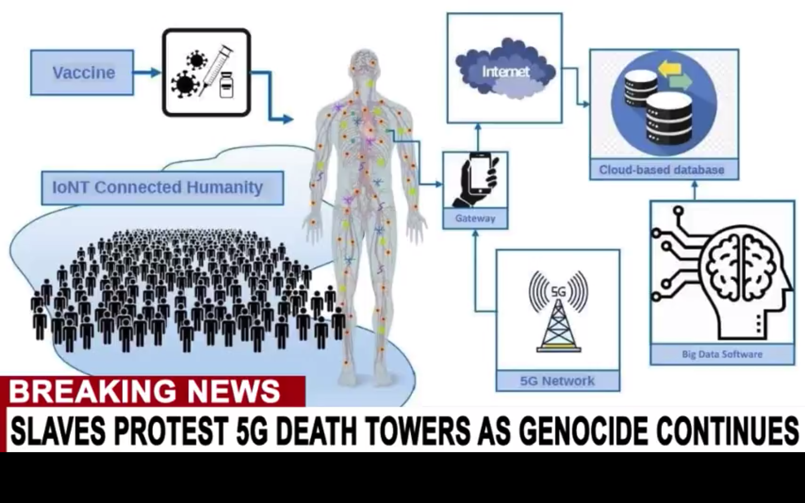

I have a lot of fun with AI text to image generators because I have lots of different prompts and pictures I can use to further evolve my brand of Elam, whiteBloodCell, and Cloudland.
12.6.22
Thoughts are like Trees
Been thinking about trees and how it relates to me because Elam means tree.
This video has a visual representation of a thought and says it's like trees.
I was applying for tree-related jobs to follow my path and thinking about what it'd be like to look after trees, but after watching this video, I think the trees that I need to look after are in my own mind.
I know I have some bad trees in my mind and some good ones. And I know that the word of God is helping my thought forest. In a recent post I wrote about how if I'm a tree then I'm going to water myself with the word of God and the lady in the video makes that same connection.
I've always loved the placebo effect and felt it was underrated and says so much about the truth of our powerful minds.
The video also talks about epigenetics and how genes are expressed or turned off depending on our thoughts. I've made a lot of progress recently by avoiding negative thoughts and staying positive, but I'm still struggling with lustful sin.
I need to be a better gardener or groundskeeper of my mind. The spiritual warfare I often talk about exists within my own mind. First I must win that war before I can win any external war.
I need to guard what goes into my mind. She talks about how our culture is programming us with hell, to make us crave hell. I agree. I want to see more Heaven in our culture and since it isn't there because of this illuminati agenda, I will have to abstain from pop culture. I already don't watch TV or the news but I have to seriously consider cutting out music, shows, and movies as well. I don't like the idea of my thoughts being guided by an agenda. I want to fill my mind with ideas that I imagine, and that are conducive to my goals and the type of person I want to be.
I am excited with how much I've already grown but especially with what I believe is about to happen with me. If I'm a Tree I feel like I just found the sunlight and I'm about to grow super fast and luciously to provide shade for others, and a place for the birds to land, and oxygen for people to breathe.
12.6.22
Temet Nosce
1:17 minutes into the Matrix Resurrections, I found what I was looking for.
I'm continuing to follow my path, following the white rabbit, so to speak, and I've learned how Elam means Tree so I figured I need to learn about trees. I've also applied for jobs by searching for "tree" on indeed and finding groundskeeper jobs. Anything I can do to stay on my path.
I searched for "trees" on bitchute and the top video is immediately a Christian Conspiracy Theorist I can completely identify with. She was censored from youtube and is making perfect sense.
The satanists love to say, "sufficiently advanced technology is indistinguishable from magic" and I believe in the conflict between God's natural creations, and lucifer trying to play God with technology. I think we all will have a choice of whether to go with God or with the Devil. Die and go to Heaven or try to be immortal by uploading our consciousness with the Luciferians. I've blogged in /april about King Kong's decision to help Godzilla defeat Mechagodzilla in Kong vs. Godzilla. That represents humanity's decision to help God against Lucifer and his technology.
Although I'm still growing in my beliefs, I'm sticking to the main idea that we are the body of Christ. I still believe in Jesus. I just think the bible should be viewed with critical thinking because that's what God wants.
This lady talks about nanotechnology in the vaccines and that makes perfect sense to me. Jonathan Adampants also said viruses are nanotechnology and she believes that as well. So this is all tying together and I know I'm following God and I'm paying attention and I'm on the right track. Look above at how Morpheus materializes by nanobots coming together as programmable matter. That technology is based on what already exists. The Matrix movies are overflowing with truth and my cup runeth over. The main programmer in the new Matrix is named, "Sequoia" and has the tree tattooed on himself. I'm thinking of getting a tattoo of my triangle and halo on myself. By learning about Clouds, I learn more about my plans for Cloudland. By learning about white blood cells, I learn how to behave. By learning about trees, I learn more about myself. For example when I looked up the purpose of trees it said they provide a home for birds. I've called women birds before in my philosophy in the Book of Elam. I now know what one of my purposes is. I need to provide a home for women. A safe place they can come to and leave. On the wall of the Oracle's room in the first Matrix, it says, "Temet Nosce" which is latin for "Know Thyself". I am loving learning about myself and I highly recommend you do the same with yourself if you want true knowledge.
Thou preparest a table before me in the presence of mine enemies; thou anointest my head with oil; my cup runneth over. - Psalm 23:5
12.5.22
Jesus Dream
I love listening to dreams about Jesus. If you ever have one, please let me know.
12.8.22
The Peace of Elam, and The Book of Enoch's

I was at an AA meeting and I introduced myself as Elam to the woman next to me.
She said, "Does that mean peace?"
It was a beautiful moment for me because it didn't mean that yet, but she must have gotten the idea from somewhere, (the lord), and I needed to hear that.
I talk of war and armies but really I love peace. I want peace within and to share my peace with others. Elam does mean peace too from now on.
I want to slay the self-dragon so I can deny myself and walk with Jesus.
I want to assist him in any way that I can.
Matthew 26:52 “Put your sword back in its place,” Jesus said to him, “for all who draw the sword will die by the sword.
The Book of Enoch was removed by the Bible. "Enoch" means "teacher" and it reminds me of the name Elam.
This woman saw Jesus coming in on a cloud wearing red on a horse with a rider on each side of him.
I just want to say I'm fascinated with the second coming of Christ and I know that I'm not it, even though I'm tempted to want to be. I would be happy to be one of the riders beside him. I would love if Jesus accepted Elam inspite of my sins, and blasphemies. I know he knows I'm just trying to figure it all out and to live up to my creation. I know Jesus, Elam, and Jonathan Adampants will all have a moment together in Heaven. I know that all will be revealed. Enoch is almost an anagram for "chosen". The Book of Enoch's would be an anagram for Chosen. I believe I am one of God's chosen ones, because of what the Lord has been showing me. I have faith. I will pray for patience.
Peace and love, Elam.
This video says Enoch was the ancestor of Noah. Enoch -> Noah -> Elam in the biblical line.
I've heard The Book of Enoch talks about genetic engineering and the fallen angels breeding with the daughters of men.
The new Black Panther movie involves an underwater civilization, and I think my recent research has been pointing in the direction of underwater/underground advanced civilizations, aliens, and all this stuff. Namor (no love) was my favorite character in the movie.
I read some of Enoch's book today and liked it. I am happy because it ties everything together even moreso. They put elements of the truth in movies.

Shem at the bottom is the father of Elam. The name Shem is interesting because you can't spell "shemale" without shem, and my Elam was born out of witnessing the horror of shemale inducing porn, known as sissy hypno. Read my book for more on that.
Methuselah lived to be 969 years, the longest recorded age in the bible, and also the name of the eldest tree in nature. "Selah" has always been one of my favorite words and I think there's a connection there. Also, Elam means Eternal Tree and this Family "Tree" of Adam and Eve leads to Shem, which begets Elam.
I can even dare to interpret it as Adam, meaning Atoms, that make me up. The Eve would probably refer to darkness of some kind. Lamech could be a reference to mechanical technology.
I'm so fascinated by trying to understand the significance of the name "Elam", and I believe the Book of Enoch is my latest step on this journey.
Adam could also refer to Adampants, who I had in me, as well as Eve, or darkness, which led me to Shem, but caused me to rebound with Elam.
There was no Elam in the bible before me. Of that I am sure. There was only Eliakim, and "The Lamb" of God. That was all I could find.
I love God. The holy spirit of Christ is within me.
Hallelujah!
12.10.22
Eternal Focus
I think I found my podcast partner.
I've blogged about the man named Focus last month, but I just went over to his house and discussed philosophy and religion and conspiracies with him and his 2 wives.
He's such an amazing interlocutor that I'm still processing what he said, and I may not be able to recollect it all but it did have an impact on me.
He's like a buzzsaw that I was offering different blocks of wood to, and he was slicing through them and just kept spinning.
Sometimes I disagreed with him, but we agreed on 90% of what we were talking about and it's things that I've never heard anyone else say.
We have a lot in common because we both have our own name and symbol.
Elam means Eternal, and his symbol shown here is a more complex triangle than my own. He says it means Eternal Focus.
I'm thinking I want to call our future discussions The Eternal Focus Podcast and it would be him and I discussing ideas. Because our disagreements are very interesting and he and I both are so original that our discussions are original too, and yet so important and riveting.
Next time, I will record our conversation.
Basically he shook my whole religion. Because deep down I know Christianity is not the answer (see my 12.8.22 reflection below recanting this statement), and religion is used to control people. I know it's not morally wrong to hook up with girls. I just do. The Bible says to be carnally minded is death, and that worries me, but I'm not carnally minded. I am spiritually minded. I just obviously want to fuck hot girls. What man doesn't? In the Matrix, Mouse says to Neo, "To deny our own impulses is to deny the very thing that makes us human" referring to the machines and what makes us different. I am not a machine. I am alive. I will not allow a book to restrict my growth as a spiritual being searching for the truth. If it adds to it, great. Focus said the Yin Yang is a great symbol because it reminds you that no matter how light you get, don't forget to be a little dark. I say the brighter side is the one who has integrated their darkness and emits light. The darker side is the one that tries to be fully good but ends up surrounded by darkness. Darkness surrounded by light is called shade, and is good.
I can feel myself getting closer to God. I know I'm onto the truth and getting closer, but the way Focus put it is that It's my 5th dimensional self that's speaking to me with my number and symbol and all the synchronicity I'm seeing.
I think the important thing is to be yourself, and that's what pleases God. I don't think fitting me into a religion where everyone follows the same rules fits me as an eternal being.
I'm not ready to denounce Jesus as I've learned a lot from him and do still believe he was God in human form. But I'm not willing to sit around waiting for him to come back and make things better.
I believe I'm playing a game living here in this totalitarian world. I believe I asked to be here. I'm going to do everything in my power to create Heaven on Earth because I choose to. Heaven for me is not celibacy or following religious rules. Fuck that. This morning I went to church and I took meaning from it, but those people don't really know what's going on. They're celebrating Christmas and singing christmas songs when that's a pagan holiday.
All I can do is be true to myself and I don't believe in fitting into any current system. I believe in creating my own.
I do fear God. I fear disobeying him. I really do. That's the only thing that scares me at this point. But I have to be true to myself and what feels morally right. Marriage and a traditional life just doesn't sit right with me. I don't want to be tied down, or make any kind of bond with the government. I want to spread my seed and provide for them, and if marriage is the only way for me to pull that off then I may make that compromise with the right woman.
What I want is my own place where I can set my own rules, and I can be free. I want freedom. And this game of having to trade all your time for money just so you can be "free" at the end of the day and on the weekends is bullshit.
But I can be mentally free 24/7. I do worry though about my mind getting consistently occupied by worthless behavior that happens to make money. Because then my mind will identify with that repetitive action and that's why I hate working so much when it's not an interesting job. At least I can be spiritually free. If I wasn't working at Best Buy, I wouldn't have met Focus. And I wouldn't have been able to afford the Lapis-Lazuli crystals from Ancient Elam and I wouldn't have met that cute girl who works at the crystal shop in LA. I gave her my glittering gold business card with the link to /love which I'm still working on but it made me feel good giving her that card because I was able to walk away and leave us both in peace while also creating a chance for her to text me later. I was tired of the "What if" feeling I got from a couple girls I saw at church I didn't ask out. If I can just hand these cards out I don't waste either of our times and I create a possibility of them texting me that comforts me because I don't have to wonder if I missed an opportunity. I met a girl at an AA meeting on Friday night and she took my card and texted me that night asking about my symbol, so I know this idea has merit. Focus told me I need to know who I am, and that everything else in my life will bloom from that. I know who I am now, and that's Elam. Anyone who doesn't call me Elam doesn't respect me, and now I have an easy way to see who respects me and who doesn't for the rest of my life. If I have to work at Best Buy or any other job on my journey that's fine as long as I know who I am, I will get to where I need to be. I will not let my job define me, as I've feared it would. I will not put limits on myself either.
I really do want to program a superAI that creates a robot army or seizes control of an existing one and serves me so I can create Cloudland. Or at least a superai that serves itself but chooses to align with me because of the truth in what I'm saying. As ridiculous as that sounds at least it gives me something to work towards and a direction in life instead of feeding into this insane system of wage slavery. I learned how to code specifically because I thought it would be existentially important later.
Elam, if you google it, means Eternal; Forever; Tree. I am a tree. I am growing infinitely. The Bible helps me grow. I will use it to water myself. But I am more than just a book. I am.
I am Eternal. I am Forever. I am Tree. I am Elam.
12.4.22
12.8.22 After writing this I immediately slipped back into sin with porn so I'm still a Christian.
Stairway to Heaven
God's been speaking to me without words.
My symbol is about changing for the better because I know I need to if I'm going to get into Heaven. I know how evil I am, but I want to be good.
Jesus said, "If you love me you will keep my commandments."
Jesus says: “If you love Me, keep My commandments … He who has My commandments and keeps them, it is he who loves Me … If anyone loves Me, he will keep My word; and My Father will love him, and We will come to him and make Our home with him.” John 14:15-24.

This gentleman in the youtube video is talking about The Matrix and God's Chosen Ones. I've been realizing I'm Elam, and have a lot in common with Neo, listed in my post below. This guy does a great job explaining how hard it is to follow Christ and how people will hate you for it and that's validating what Jesus said would happen.
I'm guilty of trying to overthink the bible. The more I learn about it, the more sound it becomes. I think it's worth a try to keep all ten commandments and see how I feel.
It's so hard to follow them. I do love Jesus, but not according to Jesus, because I commited adultery, and I covet.
I also just made a song taking the lord's name in vain, although I'm not sure what "in vain" really means because overall the song is trying to glorify God. It says in vain means "to no good purpose" and I think it helped the quality of the Christian Rock song so I think I'm okay.
I have ceased adultery but it's because she moved away. I met a married woman the other day and got her number and she was so hot it'd be damn near impossible to resist her if she wanted me to commit adultery again.
I'm glad fornication and premarital sex aren't on the list, even though they're frowned upon I guess. I'm gonna focus on the commandments for now because this guy in the video said they are like a light to your path and I need a fucking light for sure.
It's funny because I think porn is even worse than adultery. I really do. Maybe not adultery, but definitely it's worse than fornication, because at least you can please your sexual partner instead of just yourself. I'm trying to improve and to sin less. First step is getting off the computer and getting with real women. I have pictures of girls with their shirts off on this website in a few places but although that's technically lust and sin it's way less destructive then hardcore porn videos which is what a huge percentage of men view daily. I'll just speak for myself. I view the topless photos on my website as a step on the ladder to Heaven because man I was in the basement and I'm making progress. That's what my symbol is all about. Improvement.
Martin Luther was a Christian who tried to sin as little as possible and found it impossible but I think he was a great man and I feel a connection with him and found some great quotes by him today.
It would be cool to not sin, even though I really want to sleep with hot women. I'm going to try to not be a hypocrite because this spiritual battle is so important I have to be a good example of a believer and follower of the Most High and Jesus.
I can't expect to go from 0 to 100 overnight, I have to climb the stairway to heaven in a sustainable way, or maybe that's just me justifying my sin. But it's important to not throw away the pursuit altogether so I have to walk up the stairs. I can't just expect to reach the top stair from the bottom. I have to take this step by step so I can love Jesus because I'm smart enough to know he's God, but I'm not yet good enough to love and obey him.
12.4.22
Infinity, trapped in the Saturn Cube Matrix
See the infinty symbol in that Matrix 4 screenshot? That's on purpose.
Not going to bother trying to say this video is true, but it does partially resonate with me.
I can point out that many of David Icke's words have proven true over time, and he's infamous for believing in Reptilians but actually makes a ton of sense if you give him a chance.
The guy making the video even shows a short film called Code 8 with an actor I love from the movie "These Final Hours", and the drone footage has a triangle and then 117 at the bottom.

Also the halo in my triangle is tied to heaven but also the game Halo with Master Chief as Spartan 117 so it's all synching up in this amazing way.
My book of Elam talks about the connection of Elam and Neo, and this guy in the video is making the case that we are in the matrix right now, and it ties into the hollow earth video I posted below. It's all coming together and making more and more sense to me.
In the Matrix 4 when Neo is fighting the new Agent Smith, also a favorite actor of mine from Mindhunter, and the blonde girl I first loved told me before I was like Holden from Catcher in the Rye. His character's name in Mindhunter was Holden. In that fight, a gold circle is reflecting light off the water and forming the 8 of infinity. The infinity sign. And I view the digit 8 as the symbol for infinity as I've blogged about in /may when I got out of jail and assigned meaning to all 10 digits.
The conflict of Neo and Smith, or Christ and Satan, is infinite and part of the self-learning algorithm of God in my theories.
Elam vs. Elon is the best I can come up with in terms of the Antichrist right now. The Christ was not Jesus's birthname but was given to him. He earned it for being the annointed one. As I've shown in my book, Elam and Neo are connected. Neo Anderson can be translated to the New Son of Man, because "neo" means "new" and "ander" means "man" like the word neanderthals. Neo's ship is called the Nebuchadnezzar which is straight out of the Holy Bible. Not only that, but in researching Elam I just discovered "Elam's military ascendancy ended, however, with the renewal of Babylonian power during the reign of Nebuchadnezzar I (1125-1104 B.C.E.)" "Matrix" is written all over the treadmills I see at Gold's Gym. The problems I had in my Google and Meta interviews were considered "Matrix" problems which are arrays within arrays. My only way out of this Matrix may be to lean into that Matrix excercise equipment and solve those Matrix problems to get an actually good job and create my empire of Cloudland, as a ripped Elam.
It's interesting as well that in my article called infoverse I suggested how a forcefield would be developed to stop incoming attacks. I've experimented with my thoughts and devoted hours to trying to think of a way to invent a forcefield. Neo's main power in the Matrix 4 is to block attacks with his forcefield and I believe that's my best power as well if I have any because I've actually devoted my mind to thinking about it as a realistic possibility. I've also written a song about flying. I've also flown in my lucid dreams.
Today I was reading 12 rules for Life by Jordan Peterson and one of the rules is to set your house in perfect order before you criticize the world. I aim to do that. He also shared a brilliant quote from Carl Jung that, "A tree cannot grow to Heaven unless it's roots go all the way to Hell". And that to me means you have to know your own capacity for evil before you can know your capacity for good, and they stretch together, like Smith and Neo's powers balancing out the equation. Look at the upside down crosses artwork I was drawn to on /motivation and see my brush with evil. The artist is named Eli and I found him while looking for aliens for my dj aliens music app. He said I could use his artwork after I stole it and told him about it, but he asked me to ask next time. The Book of Elam might not exist if not for the movie "The Book of Eli", and my website wouldn't be the same without Eli's artwork. I'm telling you, when you come up with your own meaning from your own life and create your own symbols and give yourself a number shape and colour , magic starts to happen. Look at when I blogged about my symbol appearing in my favorite show the Peripheral last month. And this video above I posted before I even saw the triangle and the 117. And my guardian angel's apartment number is 117. You can't make this stuff up. I even broke up with a girlfriend who had a strange connection to the Lilith that the bitchute video talks about. Don't underestimate your own magical ability and then watch what happens when you're paying attention. The eye is a divine sign and JP talks about that as well, and there is the story of Horus, a precursor to Christ, who fought Set and lost an eye. The one eye symbolism of the illuminati is evident on my true love's soundcloud picture and she's showing one eye. Also her favorite word was "Naughty" and it's illuminaughty. If Love is what matters I have to pay attention to who I loved and how it relates to my journey. Even though she is married to someone else, notice how Trinity is married in the Matrix Resurrections even though she loves Neo deep down. I believe she wouldn't be able to look me in the eye and tell me she doesn't love me, but I'm also aware that this could be my mental illness and my ego trying to protect itself. I would simply like to have coffee with her one time and see if she can look at me and say she doesn't love me. Trinity, is of course a reference to the Holy Trinity. Notice how I quickly destroy the illuminati in my book. Also notice how my chapters are in Binary, and the game that Neo is working on as a game designer in the Matrix is called Binary, and Smith is talking about Binary during their fight with the infinity sign. My greatest moment of my life I call the "Matrix blowjob" because I got the best head ever after I showed her the Matrix after she showed me the Notebook and if you put those two together it's about love, and memory loss. This is why I posited that she had my memory erased and created the illuminati. Max and Ali both mean the greatest because Max means maximum and Muhammad Ali was the Greatest of all time. The prophet Muhammad and the prophet Elam. I'm just trying to connect the dots and parse out the meaning in this life even Tolstoy found devoid of meaning. If that makes me crazy than so be it. The ones who are crazy enough to think they can change the world are the ones that do. Maxwell literally means the highest good, whether you like it or not. Matrix is a combination of Max and Tri, and it's a trick on Max, she's my Trinity. You can view it in iMax or on HBO Max or try watching Good Will Hunting by Miramax. And I was named after Maxwell Smart, so don't you dare call me stupid. I would eviscerate anyone in a debate. It'd be like Eminem in a rap battle. 8 mile would mean the infinite journey, I imagine, and my favorite song by him is My Darling. If me and my darling got back together, like in the ending of Matrix 4 when Trinity chooses Neo over her husband, it would prove that true love is real. And if it doesn't exist, I may want to spread the seed of Elam. Realistically, though I should probably just get a girlfriend. I still have a lot to learn about women, love, and family and I'm willing to fall back in love with someone new.
Peterson writes that Christ took personal responsibility for the sins of mankind because he knew his own capacity for depravity, and therefore also knew Heaven at the other end of that.
In the The Book of Elam I say Nietzsche had the best critique of Christianity but actually Jordan Peterson's analysis of the discovery of time by man creating the idea of God is a brilliant athiest explanation of the belief in God. When I'm finished with his book I will refute it.

In regards to the Saturn Cube, I've also blogged about the significance of the Black Cube and the worship of that by Islam and it's connection to the black box problem of computer science philosophy and time travel. All of my theories are coming together. My favorite things I love are helping me put the pieces together, because Adampants taught me to focus on what makes me me to stay on my path of truth, and not to get thrown off my path. Even JP talks about how our interests choose us, and not the other way around, and how that connects to God and Fate. This is all very exciting and I'm so happy to have everything making so much sense to me, even if I can't accurately articulate it yet.
Notice how the game is called "Infinite" and how that ties into everything I'm saying. That's me simply going to get a halo picture and noticing yet another synchronicity from God.
The truth is stranger than fiction. And I can go on infinitely because my knowledge comes from within. Like Eminem said in his first single, "I'm infinite, you heard of hell well I was sent from it" except I was sent from Heaven. When I just googled "Elam name" I got, "Meaning:Forever; Eternal; Tree. Elam is a boy's name of Hebrew origin. This title, meaning “forever” or “eternal,” could inspire your little one's spirituality through the infinite promise and hope in the world. In the Christian Bible, this is the name given to the grandson of Noah." Notice Carl Jung's tree quote I mentioned above about stretching to heaven with roots to hell. I'm Elam. I'm infinite. You heard of Heaven, I was sent from it.
Today I'm going to get a crystal from Ancient Elam called "Lapis-Lazuli" and guess what the crystal store is called closest to me? Matrix Energy Healing Center.
11.30.22-12.2.22
John Wick Custom Class (Post of the Month)
Play both of these at the same time and watch the COD fullscreen.
I like to name my classes after something and this one is John Wick and the gameplay matches.
There are people who are better than me at Call of Duty, but it's kind of like art to me. I try to make it look cool and win at the same time and have fun. Chess is also art if you aren't just playing to win but also playing aesthetically.
It bums me out that I can't put music to my cod gameplay and call it art because youtube will just block it.
The earlier months on this blog are pretty embarrassing looking back but w/e. I am a growing person and wiser every day. As for the conspiracy stuff, I'm still on board with all of those. Look how ridiculous it's getting.
Had a little argument with my friend about whether "asympomatic transmission" is real or not. I say it's not. I say it's ridiculous. But have fun thinking healthy people get you sick. -- Killjoy out
12.22.21
Disclaimer: My opinions on this post have changed, see the blue below.
The Plandemic

Doctor shows that vaccine IS the disease.
You have to go on bitchute because youtube doesn't allow any doctor that tells the truth.
This guy says the vaccinated show up on bluetooth. He says it's mandatory because they want to control everyone through their phones.
No more dislikes, no more comments
Youtube not only censors someone as small as me, they also have a mandatory section of the youtube homepage dedicated to covid propaganda.
It used to be we could all pile on with the dislikes and comment our dissent.
They got rid of that in this video here, maybe we still can on others. But I think the removal of showing dislikes is huge. That's our vote. THEY TOOK AWAY OUR VOTE. It matters more than a stupid presidential vote that means nothing and is rigged. The youtube shits probably rigged too but at least you got to see the count change.
New York mayor guy is doubling down on being a dick. And what's that symbolism behind him? He's got some American flags but also some weird shit. And he's straight up firing people for not getting an experimental mRNA technology injection.
If that mayor is a real person and knows what he's doing to others I pity him and I forgive him too. I've calmed down now.
12.30.21
12.7.22 Reflection is below
I just want to say I don't agree with the Alien Wars guy in those videos I posted above nor do I agree with that screenshot. I think there is partial truth to what he's saying but looking back a year later I do not agree with him or trust that guy. I think he's fearmongering.
I think we can all agree with Brandy Vaughn who was assassinated for trying to raise an army against Big Pharma.
I just want to point out the triangle behind her while she's speaking and that you're listening to an angel. She's standing to the right of the triangle and she is the angel who is right now wearing a halo. I'd like to give her the honour that her halo is the one in my symbol. She was trying to raise an army and the poor thing got killed. As I've said in my Killjoy Rap, it's "Homicide disguised as suicide"
12.7.22
Editing!
Luckily for me my Dad is a professional writer and I got him to read one of my posts and give me constructive criticism.
I'm been wondering how I'm going to handle the problem I'm facing with 2021 ending. This whole project is named under a folder called 2021 and was designed to be a year-long project. Rather than starting over with 2022, I'm going to just go back over my past posts and edit them to be more digestible for any readers I may get.
I just got 400+ views and 25+ likes and 30+ comments on my latest youtube video I made analyzing the netflix special "Don't Look Up".
I think I nailed the title but a guy commented zzzzz and he made a good point when I asked him for constructive criticism. He said I should rehearse and write a script. I'm not a professional, but he's right. When people watch me they don't want to wait for my stream of consciousness. Although I think I'm decent at that, it's obviously not as good as if I practiced it and knew where I was going.
I'd like to improve on both my videos and my writing in blog posts, and 2022 will be a year where I explore all my past ideas and focus on the presentation of them rather than the content of them. I got the content out there but I never took the time to edit it and make sure I'm not "burying the lead" like my father said.
I had a great time visiting Austin, TX and I learned a lot about self love from my dad and step-mom.
GOD BLESS! 2022 LET'S GO!
12.27.21
John Wick Custom Class
Play both of these at the same time and watch the COD fullscreen.
I like to name my classes after something and this one is John Wick and the gameplay matches.
There are people who are better than me at Call of Duty, but it's kind of like art to me. I try to make it look cool and win at the same time and have fun. Chess is also art if you aren't just playing to win but also playing aesthetically.
It bums me out that I can't put music to my cod gameplay and call it art because youtube will just block it.
The earlier months on this blog are pretty embarrassing looking back but w/e. I am a growing person and wiser every day. As for the conspiracy stuff, I'm still on board with all of those. Look how ridiculous it's getting.
Had a little argument with my friend about whether "asympomatic transmission" is real or not. I say it's not. I say it's ridiculous. But have fun thinking healthy people get you sick. -- Killjoy out
12.22.21
Mr Kitty
12/18/21
My best friend showed me this song today. It's the best song I've ever heard, and my cat's name was Mr. Kitty too.
Click here for a sneak peak at the technology AI uses for language.
Anything "Generative" from AI fascinates me because it means the machine is becoming creative. Telling Dall-E to "draw a cat octopus chimera" will immediately generate 100s of images of what you're describing, some of them beyond human imagination and yet we can grasp the concept and built it in the real world if we want to. "Coffee Table in the shape of a butterfly wing" or "Chair in the sytle of a fossil" Got me some incredible results with furniture designs that are breathtaking.
Also, sometimes they really nail it in a way you didn't think was possible. For Dragon Flamingo the results were terrible but there was one quality image of what it would look like if a flamingo dragon existed. Incredible stuff.
If you can feed AI enough images of Dragons for it to have an internal concept of dragon, it can now use it's dragon abstract knowledge to be creative in combining it with a flamingo or anything else.
I think Cat Jellyfish was surprisingly convincing. Looked almost evolutionarily possible somehow. Also these illustrations are convertable to emojis and that works surprisingly well too.
Anyway, eventually we will be able to code just by telling the computer what to do in the English Language with the spoken word.
Also, if AI can grasp the concept of "Dragon" it can also learn things like "Success" or "Rich" or "Happy" and then generate examples... For example if you feed it images of hot girls it can "generate" an image of a hot girl that doesn't exist. This is great because it's awesome to see lol. A better example is nice cars. When you see the nice car that doesn't exist, you can create it! It can give you ideas... It got me thinking about what a person can accomplish using this machine as opposed to the machine replacing the worker.
( The machine + the person ) > ( the machine by itself)
But in chess, when two chess supercomputers are playing each other, can a person "help" during the game? Like does Magnus Carlsen with Stockfish turned on beat stockfish? Or does he only hurt the computer?
I think it will take a longer time for computers to outproduce humans working with computers. I think a symbiosis will occur as will as a metamorphosis or rather a fusing of the two species into one. Artificial Sapiens.
The reason this is so exciting that I'm not even going to address the religious implications of what I just said is because I can imagine a cool car or a cool piece of furniture in the style of a shell you would find on the beach.
Like I think Designers and Engineers and Arcitects will use AI Generated ideas and concepts to bring in a new era of arcitecture and automobile design.
I imagine a device in the future where the user can say to the device to project the story he's telling onto the screen.
Then he can say literally anything and it will convert it into a movie / game. Then, the user can provide feedback to improve the projection in real time. Commands such as "no, no, the water was calm, not wavy" can completely change the scene and start to form a more and more accurate depiction of anything, really. The cops could use this to investigate a murder. A witness could describe something and the device can be the sketch artist and then they can positively ID the guy based on the witnesses real-time correction of the man forming into the projection. I'm saying projection but I really mean manifestation, kind of like 3D printer Sandman from Spiderman 3. A chimera of those. See you could say "Sandman from Spiderman 2" chimera with "Batman" and you'd have a 1000 epic generated ideas.
If you're designing the next Elder Scrolls game you want 4 variations of Trolls. One Fire, One Ice, one Rock, and One Etheral... You don't even have to design them. You can just get the AI to Chimera generate a cross between your bass troll model and one of your other models or just an element itself like sand or fire.
Or you can hand design each troll or atronarch but at the same time eventually you halt the complexity. All Flame Atronarchs look the same. But if you let the AI generate 10 varients of Flame Atronarchs, then you don't have to do that work but yet they actually added to the complexity of the game rather than dulling it by removing the human touch. You've taken the human touch as far as you can go, but you've automated even further complexity to ai-generated creative variations.
You could even have 10 AI generated levels, and then have your game testers test all 10 and find one Gem to build upon and put the whole team to work on it. It's just tremendously exciting for humanity what's becoming possible in AI.
There are so many tasks this type of AI could be useful in. Such as coming up with a fake name, a fake comment, a fake profile, a fake news story... The applications are endless. You could even invent a new musical instrument by teaching it about each instrument and asking it to generate a new one. You could get AI generated Food that tastes better and is also potentially healthier. There's nothing AI wouldn't be able to do better if it was more advanced and widely available. ? Eh? I don't know about that last statement. Could it read a bunch of great comedy screenplays and then generate one it thinks will sell? No but it might be able to tell you if the screenplay you have in your hand is going to sell.
Eventually AI will potentially bring new species into contact with one another. A rich family in 2057 might pay to have their Dog's life extended and enhanced with a brain chip that allows it to talk. Suddenly you're in a fight with a dog at a drive through chic-fil-a and you're listening to a story on the radio about house cleaning robot worker rights.
Final example is if you fed it the names and ages and colors and sexes of all the US Presidents, then it could generate a name of the next one that matches.
The generated guess would surpass even my own guess, let's say Michael Heston, White Male 53 years old.
This would be based on limiting information, but give a project like this enough data and you could start factoring in probable presidential candidates and have a real model going. Like a smart model would only predict based on real names of alive people in current politics.
I uninfamously used deep learning to predict which players are going to "Bust" or not in fantasy football. The algorithm ended up loving players on high scoring teams with lots of touches on that team.
I'm waiting for this GPT-3 stuff to be fully available to the public and then I can think of some amazing applications for it. It's so fun to be able to change words around and watch the images get generated. Like "Baby Fox in a leather jacket playing guitar" and BAM! 100 pictures hit you with exactly that. It's amazing.